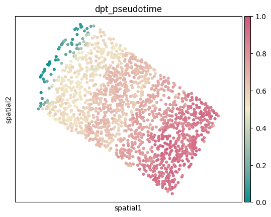
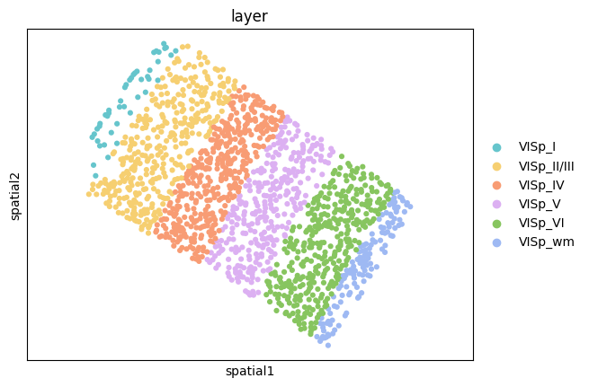
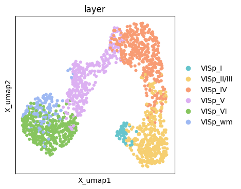
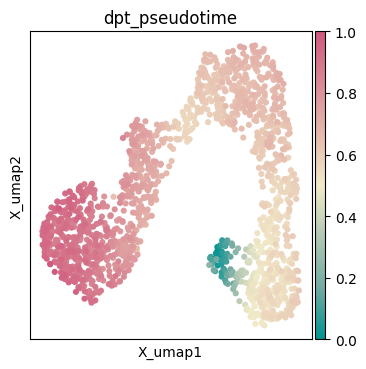
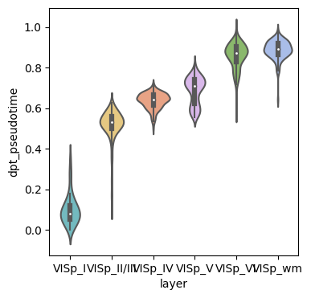
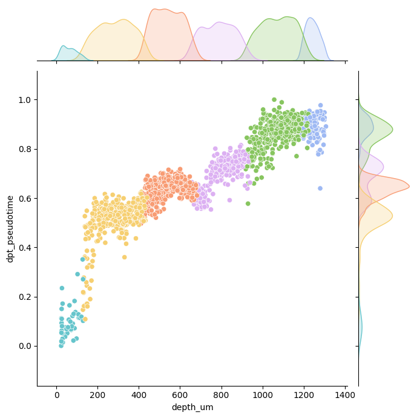

Application with new data
This tutorial demonstrates how to pseudo-spatiotemporal analysis on BaristaSeq mouse visual cortex data using Pysodb and SpaceFlow.
A reference paper can be found at https://www.nature.com/articles/s41467-022-31739-w.
This tutorial refers to the following tutorial at https://github.com/hongleir/SpaceFlow/blob/master/tutorials/seqfish_mouse_embryogenesis.ipynb. At the same time, the way of loadding data is modified by using Pysodb.
Import packages and set configurations
[1]:
# Use the Python warnings module to filter and ignore any warnings that may occur in the program after this point.
import warnings
warnings.filterwarnings("ignore")
[2]:
# Import several python packages commonly used in data analysis and visualization.
# numpy (imported as np) is a package for numerical computing with arrays.
import numpy as np
# scanpy (imported as sc) is a package for single-cell RNA sequencing analysis.
import scanpy as sc
# matplotlib.pyplot (imported as plt) is a package for data visualization.
import matplotlib.pyplot as plt
# seaborn (imported as sns) is a package for statistical data visualization, providing high-level interfaces for creating informative and attractive visualizations.
import seaborn as sns
[3]:
# from SpaceFlow package import SpaceFlow module
from SpaceFlow import SpaceFlow
[4]:
# Imports a palettable package
import palettable
# Create three variables with lists of colors for categorical visualizations and biotechnology-related visualizations, respectively.
cmp_pspace = palettable.cartocolors.diverging.TealRose_7.mpl_colormap
cmp_domain = palettable.cartocolors.qualitative.Pastel_10.mpl_colors
cmp_ct = palettable.cartocolors.qualitative.Safe_10.mpl_colors
Streamline development of loading spatial data with Pysodb
[5]:
# Import pysodb package
# Pysodb is a Python package that provides a set of tools for working with SODB databases.
# SODB is a format used to store data in memory-mapped files for efficient access and querying.
# This package allows users to interact with SODB files using Python.
import pysodb
[6]:
# Initialize the sodb object
sodb = pysodb.SODB()
[7]:
# Define names of the dataset_name and experiment_name
dataset_name = 'Sun2021Integrating'
experiment_name = 'Slice_1'
# Load a specific experiment
# It takes two arguments: the name of the dataset and the name of the experiment to load.
# Two arguments are available at https://gene.ai.tencent.com/SpatialOmics/.
#%%time
adata = sodb.load_experiment(dataset_name,experiment_name)
load experiment[Slice_1] in dataset[Sun2021Integrating]
[8]:
# Remove cells belong to the layers 'outside_VISp' and 'VISp'
adata = adata[adata.obs['layer']!='outside_VISp']
adata = adata[adata.obs['layer']!='VISp']
[9]:
# Filter out genes
sc.pp.filter_genes(adata, min_cells=3)
Perform SpaceFlow for pseudo-spatiotemporal analysis
[10]:
# Create SpaceFlow Object
#%%time
#sf = SpaceFlow.SpaceFlow(adata=adata)
sf = SpaceFlow.SpaceFlow(
count_matrix=adata.X,
spatial_locs=adata.obsm['spatial'],
sample_names=adata.obs_names,
gene_names=adata.var_names
)
[11]:
# Preprocess data
#%%time
sf.preprocessing_data(n_top_genes=3000)
[12]:
# Train a deep graph network model
#%%time
sf.train(
spatial_regularization_strength=0.1,
z_dim=50,
lr=1e-3,
epochs=1000,
max_patience=50,
min_stop=100,
random_seed=42,
gpu=0,
regularization_acceleration=True,
edge_subset_sz=1000000
)
Epoch 2/1000, Loss: 1.4427732229232788
Epoch 12/1000, Loss: 1.404854416847229
Epoch 22/1000, Loss: 1.355185866355896
Epoch 32/1000, Loss: 1.278242826461792
Epoch 42/1000, Loss: 1.1435610055923462
Epoch 52/1000, Loss: 0.9432040452957153
Epoch 62/1000, Loss: 0.714905321598053
Epoch 72/1000, Loss: 0.5822354555130005
Epoch 82/1000, Loss: 0.5121979713439941
Epoch 92/1000, Loss: 0.425785630941391
Epoch 102/1000, Loss: 0.37741926312446594
Epoch 112/1000, Loss: 0.3343759775161743
Epoch 122/1000, Loss: 0.3119865655899048
Epoch 132/1000, Loss: 0.26779788732528687
Epoch 142/1000, Loss: 0.22297403216362
Epoch 152/1000, Loss: 0.28504329919815063
Epoch 162/1000, Loss: 0.22740697860717773
Epoch 172/1000, Loss: 0.234877809882164
Epoch 182/1000, Loss: 0.1949552297592163
Epoch 192/1000, Loss: 0.20016708970069885
Epoch 202/1000, Loss: 0.2028239667415619
Epoch 212/1000, Loss: 0.173057422041893
Epoch 222/1000, Loss: 0.21973812580108643
Epoch 232/1000, Loss: 0.17184185981750488
Epoch 242/1000, Loss: 0.2074703425168991
Epoch 252/1000, Loss: 0.19310833513736725
Epoch 262/1000, Loss: 0.2128731906414032
Epoch 272/1000, Loss: 0.17560149729251862
Epoch 282/1000, Loss: 0.2080163210630417
Epoch 292/1000, Loss: 0.18244342505931854
Epoch 302/1000, Loss: 0.17130610346794128
Epoch 312/1000, Loss: 0.16225826740264893
Epoch 322/1000, Loss: 0.15506717562675476
Epoch 332/1000, Loss: 0.1312013417482376
Epoch 342/1000, Loss: 0.14738863706588745
Epoch 352/1000, Loss: 0.1790708303451538
Epoch 362/1000, Loss: 0.1254740208387375
Epoch 372/1000, Loss: 0.1862727850675583
Epoch 382/1000, Loss: 0.17113451659679413
Epoch 392/1000, Loss: 0.141239196062088
Epoch 402/1000, Loss: 0.11042129248380661
Epoch 412/1000, Loss: 0.1695185899734497
Epoch 422/1000, Loss: 0.11782366037368774
Epoch 432/1000, Loss: 0.14781805872917175
Epoch 442/1000, Loss: 0.17524565756320953
Epoch 452/1000, Loss: 0.13630664348602295
Epoch 462/1000, Loss: 0.15702477097511292
Epoch 472/1000, Loss: 0.11048941314220428
Epoch 482/1000, Loss: 0.12970110774040222
Epoch 492/1000, Loss: 0.15136636793613434
Epoch 502/1000, Loss: 0.10564137995243073
Epoch 512/1000, Loss: 0.14658908545970917
Epoch 522/1000, Loss: 0.11960890889167786
Epoch 532/1000, Loss: 0.13005761802196503
Epoch 542/1000, Loss: 0.11053520441055298
Epoch 552/1000, Loss: 0.11907373368740082
Epoch 562/1000, Loss: 0.1232338398694992
Epoch 572/1000, Loss: 0.11129128932952881
Epoch 582/1000, Loss: 0.10171715170145035
Epoch 592/1000, Loss: 0.09877597540616989
Epoch 602/1000, Loss: 0.12555311620235443
Epoch 612/1000, Loss: 0.10553622245788574
Epoch 622/1000, Loss: 0.13101576268672943
Epoch 632/1000, Loss: 0.1205601841211319
Training complete!
Embedding is saved at ./embedding.tsv
[12]:
array([[ 0.8899192 , 0.01435345, 0.7866027 , ..., 0.5507234 ,
-0.03758647, -0.08572218],
[ 0.8003285 , 0.00401396, 0.72124624, ..., 0.42994535,
-0.04228881, -0.06209074],
[ 0.8963664 , 0.01202957, 0.7585074 , ..., 0.59778905,
-0.03772109, -0.08880965],
...,
[ 0.48202616, 0.01098088, 0.6471445 , ..., -0.00690297,
0.73529345, 0.32098433],
[ 0.5201945 , 0.00505677, 0.6052369 , ..., -0.00182656,
0.46181548, 0.19144082],
[ 0.4544619 , 0.00249925, 0.5253095 , ..., -0.00313081,
0.6240246 , 0.4014499 ]], dtype=float32)
[13]:
# Idenfify the spatiotemporal patterns through pseudo-Spatiotemporal Map (pSM)
sf.pseudo_Spatiotemporal_Map(pSM_values_save_filepath="./pSM_values.tsv", n_neighbors=20, resolution=1.0)
Performing pseudo-Spatiotemporal Map
pseudo-Spatiotemporal Map(pSM) calculation complete, pSM values of cells or spots saved at ./pSM_values.tsv!
[14]:
# Create a new column called 'pspace' from pSM values
adata.obs['pspace'] = np.array(sf.pSM_values)
[15]:
# Create a UMAP projection from SpaceFlow's embedding
adata.obsm['embedding'] = sf.embedding
sc.pp.neighbors(adata, n_neighbors=20, use_rep='embedding')
sc.tl.umap(adata)
[16]:
# Since this dataset contains 'depth_um' in obs, a iroot was set to be the cell with smallest depth_um.
# For datasets without depth information, one can use the pseudo_Spatiotemporal_Map function
# Here set the iroot according to "depth_um"
# Select the root cell for trajectory inference based on its depth, by setting the index of the cell with the smallest 'depth_um' value as the root
adata.uns['iroot'] = np.argmin(adata.obs['depth_um'])
sc.tl.diffmap(adata)
sc.tl.dpt(adata)
[17]:
# Plot spatial embedding and UMAP embedding for diffusion pseudotime and layer(label), respectively
# si = 'Slice_1'
ax = sc.pl.embedding(adata,basis='spatial',color=['dpt_pseudotime'],show=False,color_map=cmp_pspace)
ax.axis('equal')
# plt.savefig(f'../figures/pspace/BaristaSeq_{si}_pspace.png',bbox_inches='tight',transparent=True,dpi=400)
# plt.savefig(f'../figures/pspace/BaristaSeq_{si}_pspace.pdf',bbox_inches='tight',transparent=True,dpi=400)
ax = sc.pl.embedding(adata,basis='spatial',color='layer',show=False,palette=cmp_domain)
ax.axis('equal')
# plt.savefig(f'../figures/pspace/BaristaSeq_{si}_domain.png',bbox_inches='tight',transparent=True,dpi=400)
# plt.savefig(f'../figures/pspace/BaristaSeq_{si}_domain.pdf',bbox_inches='tight',transparent=True,dpi=400)
fig, ax = plt.subplots()
fig.set_size_inches(4, 4)
sc.pl.embedding(adata,basis='X_umap',color='layer',show=False,palette=cmp_domain,ax=ax)
#ax.axis('equal')
# plt.savefig(f'../figures/pspace/BaristaSeq_{si}_UMAP_domain.png',bbox_inches='tight',transparent=True,dpi=400)
# plt.savefig(f'../figures/pspace/BaristaSeq_{si}_UMAP_domain.pdf',bbox_inches='tight',transparent=True,dpi=400)
fig, ax = plt.subplots()
fig.set_size_inches(4, 4)
sc.pl.embedding(adata,basis='X_umap',color=['dpt_pseudotime'],show=False,color_map=cmp_pspace,ax=ax)
#ax.axis('equal')
# plt.savefig(f'../figures/pspace/BaristaSeq_{si}_UMAP_pspace.png',bbox_inches='tight',transparent=True,dpi=400)
# plt.savefig(f'../figures/pspace/BaristaSeq_{si}_UMAP_pspace.pdf',bbox_inches='tight',transparent=True,dpi=400)
[17]:
<Axes: title={'center': 'dpt_pseudotime'}, xlabel='X_umap1', ylabel='X_umap2'>




[18]:
# Check whether the pseudo-spatiotemporal (dpt_pseudotime) value from infer increases according to the layer of the cortex
adata_use = adata
fig,ax = plt.subplots(figsize=(4,4))
sns.violinplot(data=adata_use.obs,x='layer',y='dpt_pseudotime',palette = adata_use.uns['layer_colors'],ax=ax)
# plt.savefig(f'../figures/pspace/BaristaSeq_{si}_violin.png',bbox_inches='tight',transparent=True,dpi=400)
# plt.savefig(f'../figures/pspace/BaristaSeq_{si}_violin.pdf',bbox_inches='tight',transparent=True,dpi=400)
[18]:
<Axes: xlabel='layer', ylabel='dpt_pseudotime'>

[19]:
adata.obs
[19]:
| Slice | x | y | Dist to pia | Dist to bottom | Angle | unused-1 | unused-2 | x_um | y_um | depth_um | layer | leiden | pspace | dpt_pseudotime | |
|---|---|---|---|---|---|---|---|---|---|---|---|---|---|---|---|
| 20022 | 1 | 12186.20 | 8617.70 | 1029.630 | 205.270 | 174.894 | 0 | 0 | 1218.620 | 861.770 | 1093.752193 | VISp_VI | 1 | 0.911279 | 0.903298 |
| 20023 | 1 | 12789.10 | 8690.82 | 1072.540 | 168.011 | 172.700 | 0 | 0 | 1278.910 | 869.082 | 1139.629730 | VISp_VI | 4 | 0.892462 | 0.882942 |
| 20024 | 1 | 11927.80 | 8715.20 | 1003.280 | 231.018 | 177.522 | 0 | 0 | 1192.780 | 871.520 | 1066.880345 | VISp_VI | 1 | 0.928142 | 0.921913 |
| 20025 | 1 | 12860.60 | 8729.82 | 1075.760 | 165.770 | 172.700 | 0 | 0 | 1286.060 | 872.982 | 1143.373530 | VISp_VI | 4 | 0.895546 | 0.886348 |
| 20027 | 1 | 12587.60 | 8760.70 | 1052.380 | 187.131 | 172.700 | 0 | 0 | 1258.760 | 876.070 | 1119.019231 | VISp_VI | 3 | 0.909229 | 0.901504 |
| ... | ... | ... | ... | ... | ... | ... | ... | ... | ... | ... | ... | ... | ... | ... | ... |
| 230184 | 1 | 3239.60 | 8952.13 | 307.763 | 971.248 | 178.930 | 0 | 0 | 323.960 | 895.213 | 333.538252 | VISp_II/III | 4 | 0.715771 | 0.520664 |
| 230186 | 1 | 2713.10 | 9006.56 | 261.052 | 1018.700 | 177.579 | 0 | 0 | 271.310 | 900.656 | 286.855966 | VISp_II/III | 2 | 0.703140 | 0.509154 |
| 230187 | 1 | 2193.10 | 9009.00 | 214.572 | 1063.490 | 172.257 | 0 | 0 | 219.310 | 900.900 | 243.621417 | VISp_II/III | 0 | 0.783840 | 0.606285 |
| 230188 | 1 | 2405.97 | 9015.50 | 234.015 | 1045.450 | 171.641 | 0 | 0 | 240.597 | 901.550 | 260.900559 | VISp_II/III | 0 | 0.727675 | 0.530846 |
| 230192 | 1 | 2963.35 | 9161.75 | 273.140 | 1005.830 | 178.946 | 0 | 0 | 296.335 | 916.175 | 298.913498 | VISp_II/III | 0 | 0.720848 | 0.534821 |
1525 rows × 15 columns
[20]:
adata_use.uns['layer_colors']
[20]:
['#66c5cc', '#f6cf71', '#f89c74', '#dcb0f2', '#87c55f', '#9eb9f3']
[21]:
# Check whether the pseudo-spatiotemporal (dpt_pseudotime) from infer was correlated with their depth_um (depth_um)
adata_use = adata
g = sns.jointplot(x="depth_um", y="dpt_pseudotime", data=adata_use.obs,hue='layer',
palette=list(adata_use.uns['layer_colors']),
# kind="reg",
# truncate=False,
# xlim=(0, 60), ylim=(0, 12),
# color="m",
height=7)
g.ax_joint.legend_.remove()
# plt.savefig(f'../figures/pspace/BaristaSeq_{si}_jointplot.png',bbox_inches='tight',transparent=True,dpi=400)
# plt.savefig(f'../figures/pspace/BaristaSeq_{si}_jointplot.pdf',bbox_inches='tight',transparent=True,dpi=400)
